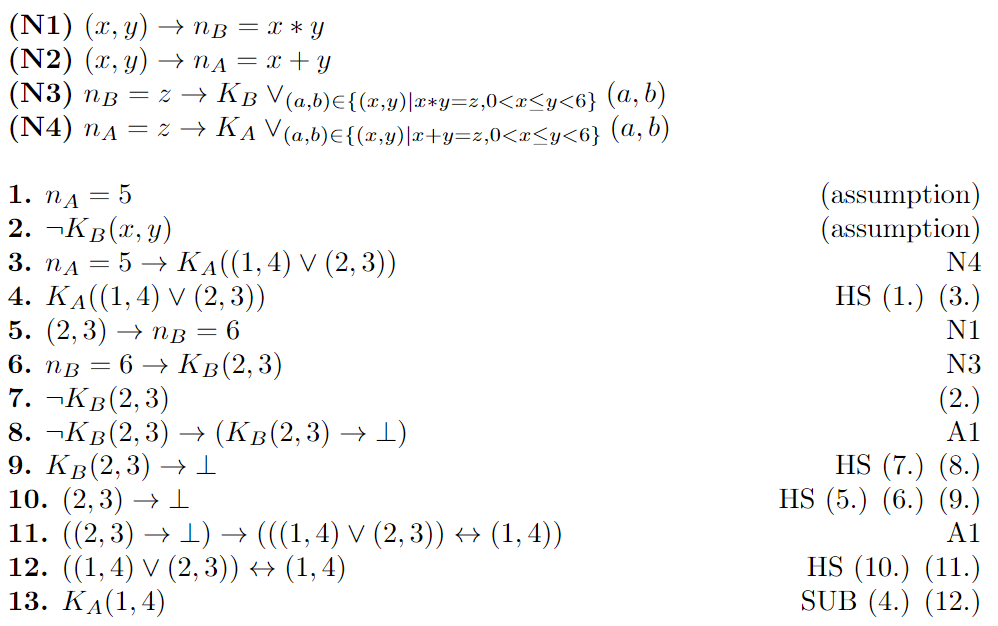

To think about the logic underlying the number game, we first want to find a logical system supporting the number game. Therefore, we first look at what kind of models we are considering. The most intuitive way of thinking of possible states is that they are possible combinations of the given numbers, for example (4,6). We then also need to have certain relations between the possible states, so let us say that we are in our example possible state, (4,6), and we have a number limit of 10. The product of these numbers is 24, and their sum is 10. This means that the 'product-possible' states are only (4,6) and (3,8). The 'sum-possible' states are (1,9), (2,8), (3,7), (4,6) and (5,5). We see that in a specific state, we have two types of connections; those connecting to states with the same sum, and those connecting to states with the same product. Since we have that the product and the sum of the numbers in a certain possible state are always the same, these relations, and therefore every possible model will always be reflexive. It is also given that if a state, for example (5,5) has a sum relation with (4,6), then there is also a sum-relation between (4,6) and (5,5); models have to be Euclidean. Additionally, we see that when we create a list of accessible states, they have some property that they share. Either their sum or their product will be the same. This implies that from the 'sum-possible' states when there is a 'sum'-connection between (4,6) and (5,5) and between (4,6) and (3,7), there has to be a connection between (5,5) and (3,7) because they all add up to 10. Models that we are considering therefore also have to be transitive. Since we are reasoning about knowledge and considering models that have to be reflexive, euclidean, and transitive, we make use of the corresponding modal logic system S5 for two agents.
We can then write, using the usual notation of S5 for two agents, for example, KAKBp with the meaning 'Alice knows that Bob knows that p'.
We now have defined the types of relations we allow, as well as the way that our states are structured. What is left is to create a valuation at the possible states. The kind of statements that we wish to make. Within the game we are considering, the only possible proposition at a state is 'this is the true state'. In all the states we consider possible, however, we do not know whether or not it is the real state. Instead of using a proposition like 'this is the true state', at each state we will have a corresponding proposition that holds there. That is, at any state (x,y), we have a proposition (x,y) that is true there.
From the transitivity, reflexivity and euclidean properties of our system, it follows that on this model we have the S5 logic with 2 agents, Alice and Bob. However, we also are using the public announcements of `I do not know the numbers' as a way of making logical statements. Therefore, the logic that we will use is the public announcement logic.
As a summary; we will represent the Numbers Game by a model that corresponds to the public announcement logic. Such a model we will call M = (S, R, π, P). The set of states S of this model will (initially) consist of states {(x,y)|U≤x≤y<L, x,y ∈ N}, where L and U are the upper and lower bound respectively. The set of relations consists of the transitive, reflexive, and euclidean relations, such that. there is a sum-relation RA between (x,y) and (u,v) if x+y = u+v, and there is a product-relation RB between (x,y) and (u,v) if x*y = u*v. We consider the propositions P={(x,y)|(x,y) ∈ S}. The truth evaluation is given by π(x,y)(x,y) = T.On this model, we will use the Public Announcement logic PA. We can then phrase the announcements that Alice and Bob make in terms of a public announcement of the form: [¬Ki(x,y)], where i=A for Alice and i=B for Bob. Since we are looking from an outside perspective at the problem, we can then study if it is possible to see if we can find the true world based on the public announcements that were made. Such a statement will be of form [¬KA(x,y)][¬KB(x,y)]...[Ki(x,y)]Ki+1(x,y). Where i can be A(lice) or B(ob), and i+1 B(ob) or A(lice). As an example, let's say Alice says she does not know, Bob says he does not know, and then Alice knows. Then we get the statement form: [¬KA(x,y)][¬KB(x,y)][KA(x,y)]KB(x,y). Where we have to check if for some specific proposition (x,y) in the model, this statement holds at all states.
An example of a formal proof is shown below. It is assumed that the numbers are below 6 and that Alice received the number 5. The proof shows that if Bob states that he does not know, Alice knows that the numbers are 1 and 4. The rules N1-N4 express general knowledge about the game. N1 states that the number N_B that Bob receives is the product of the two numbers and N2 expresses that the number N_A that Alice receives is the sum of both numbers. N3 expresses that Bob only considers the number combinations possible that have a product of N_B and similarly, N4 expresses that Alice only considers number combinations possible that have a sum of N_A. 